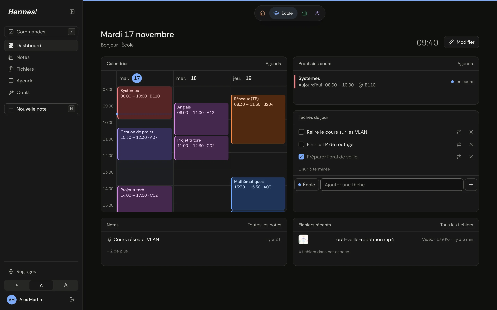
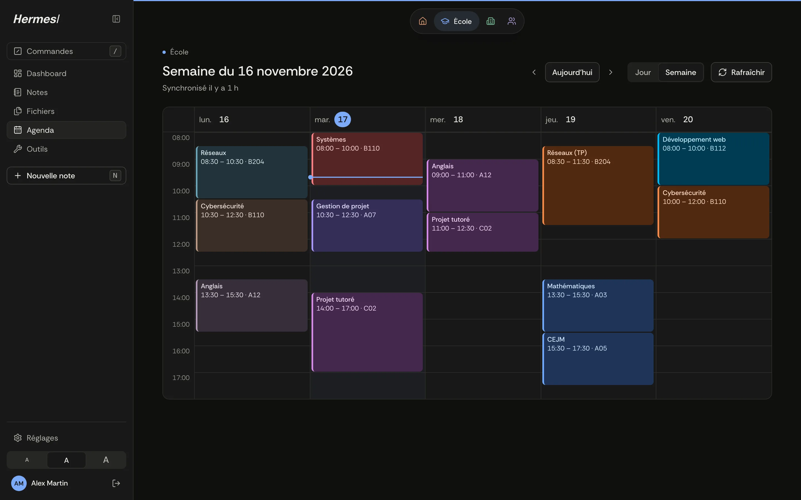
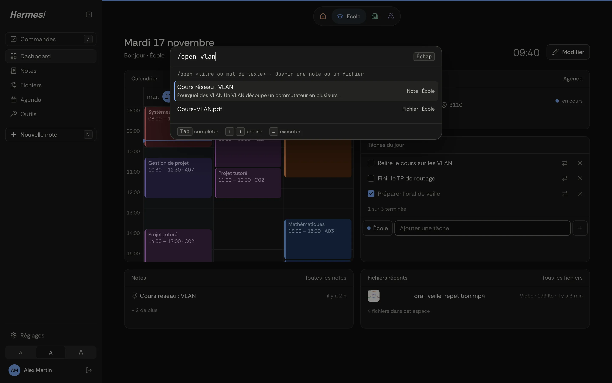
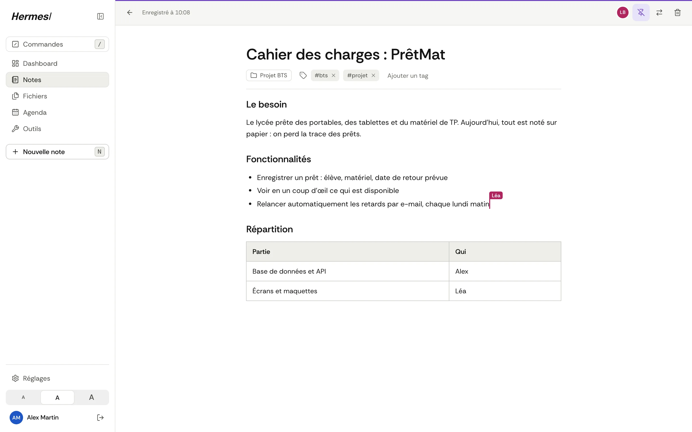
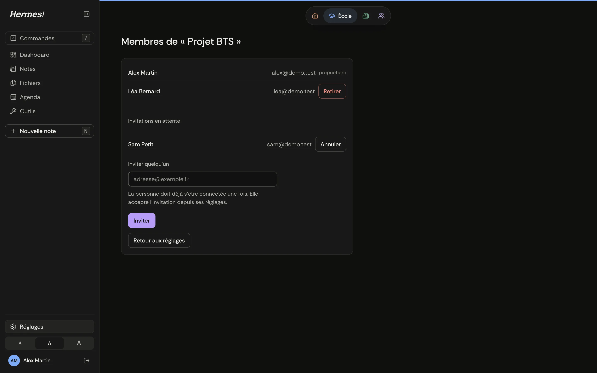
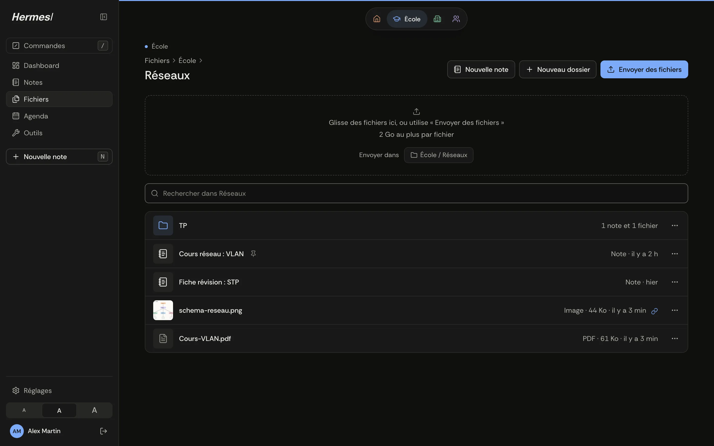
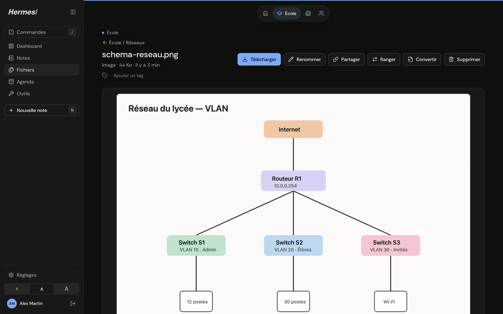
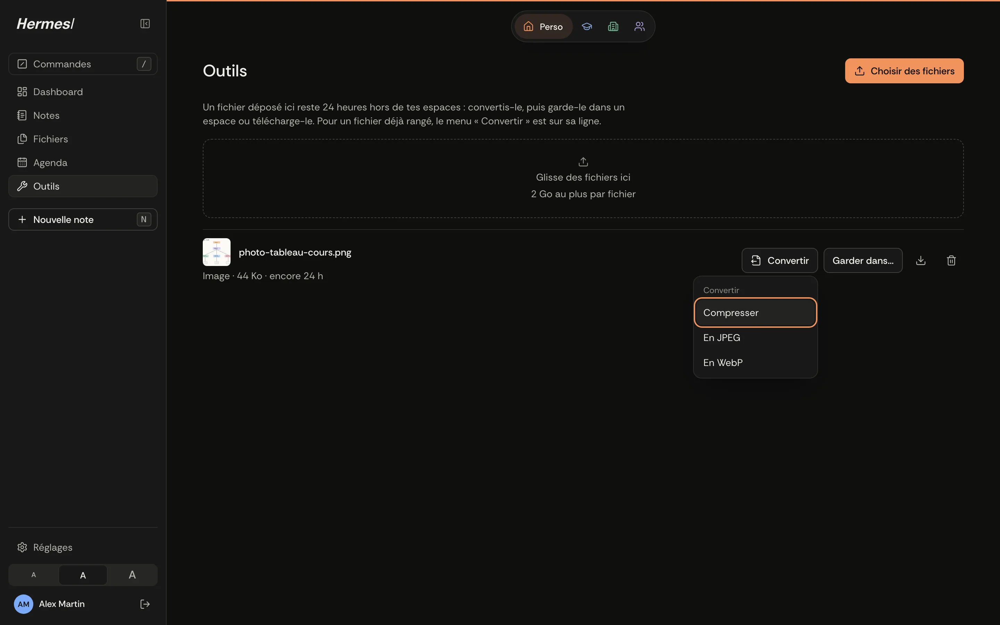
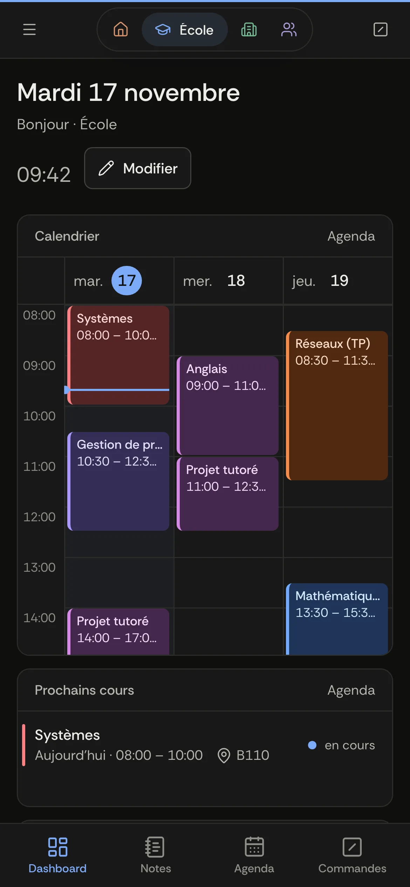
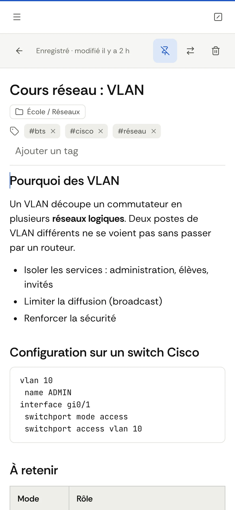

Captures · instance de démonstration
L'application, telle qu'elle tourne
Dix captures de la vraie application, sur ordinateur et sur iPhone, prises le 17 novembre 2026. Les données sont fictives : Alex, en BTS, et Léa, avec qui il partage un espace. Un clic ouvre une capture en grand.
Au quotidien
Un espace, et tout suit
Chaque espace a son dashboard, son agenda et ses notes. Ici, l'espace École d'Alex, un mardi matin.


Dashboard
L'emploi du temps sur trois jours, avec le cours en cours, les tâches du jour, la note épinglée et les fichiers récents. Chaque widget se déplace et s'agrandit.


Agenda
L'emploi du temps Pronote en vue semaine, importé par son lien iCal et resynchronisé toutes les heures.


Barre de commandes
« / » ouvre la barre de commandes : /open vlan trouve la note du cours et le PDF du même nom, sans quitter le clavier.
À plusieurs
Un espace partagé, une note écrite à deux
Alex partage l'espace « Projet BTS » avec Léa. Les notes, les fichiers, les dossiers et les tâches y sont communs ; l'agenda reste à chacun.


Une note, deux personnes, en direct
Vue par Alex pendant que Léa écrit : son texte arrive au fil de la frappe, avec son curseur et son prénom, et son avatar s'affiche en haut de la note. Ici en thème clair.


Membres de l'espace
Le propriétaire invite par adresse e-mail ; l'invité accepte depuis ses réglages. Léa est membre, Sam n'a pas encore répondu.
Fichiers et outils
Ranger, partager, convertir
Des dossiers pour les fichiers comme pour les notes, un aperçu, un lien qui expire, et des conversions qui tournent à part.


Dossiers
Le dossier Réseaux de l'espace École : un sous-dossier, des notes et des fichiers côte à côte, avec leur vignette. L'icône de lien signale un fichier partagé.


Aperçu
L'aperçu d'une image, et ce qu'on peut en faire : télécharger, renommer, partager par un lien qui expire, ranger ailleurs, convertir.


Outils
Un fichier déposé dans Outils y reste 24 heures, le temps de le compresser ou de le convertir, puis de le garder dans un espace ou de le télécharger.
Sur iPhone
Comme une app
Installée sur l'écran d'accueil : l'île des espaces en haut, quatre raccourcis en bas, et l'éditeur de notes au doigt.


Dashboard
Thème sombre, l'agenda en colonnes et les prochains cours.


Note de cours
La note sur les VLAN, en thème clair.